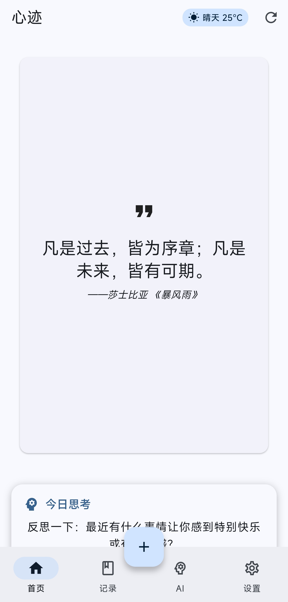
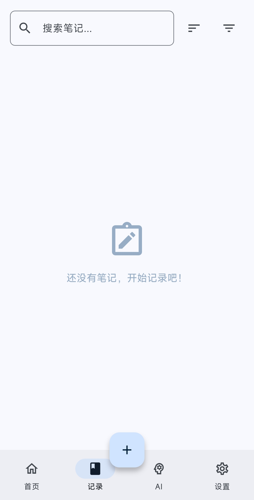
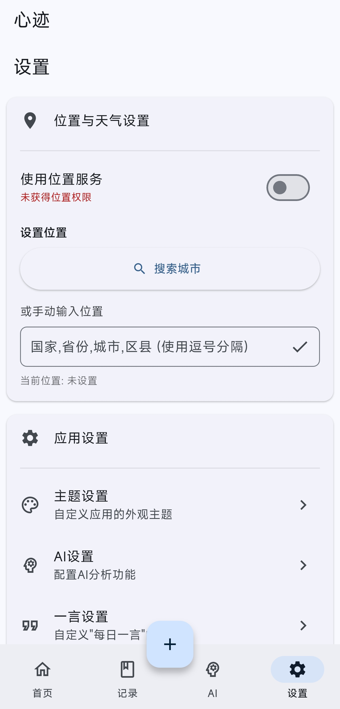

心迹不仅仅是一款简洁的日记应用，更是一个强大的个人思想追踪器和AI洞察助手。它帮助你捕捉和记录日常思绪，并利用先进的AI技术提供深度洞察。
基于Flutter框架开发，同时支持移动端和桌面端，随时随地记录和回顾你的心迹。
简洁优雅的界面，让你专注于快速记录想法、感悟、灵感，捕捉每一个心动瞬间。支持富文本编辑，可添加标签和分类，轻松整理你的思考。
集成强大的AI服务，深度分析你的笔记内容，提供情感分析、核心思想提炼、行动建议和思维模式分析等多维度智能洞察。
每天为你生成一个发人深省的哲学或智慧提示，激发深度思考，拓展思维边界，培养反思习惯。
自定义笔记分类，灵活组织和管理你的心迹，方便回顾和检索。支持自定义分类图标，视觉化管理更直观。
为笔记添加多个标签，实现多维度归类，提升检索效率，构建知识网络。
强大的关键词搜索功能，快速定位所需笔记，支持标题、内容、标签多维度搜索，回顾特定时期的思考。
自动或手动记录笔记创建位置，为思考增添空间维度，回忆更加丰富立体。
自动记录笔记创建时的天气状况，为日后回顾增添环境背景，丰富记忆线索。
提供舒适的深色模式，呵护你的双眼，适应不同光线环境，夜间使用更护眼。
心迹正在不断发展和完善中。以下是我们当前的开发计划和未来功能展望：
心迹采用Material Design 3规范设计，界面美观现代，操作流畅自然，提供一致的用户体验。




git clone https://github.com/Shangjin-Xiao/ThoughtEcho.git
cd ThoughtEchoflutter pub getflutter run